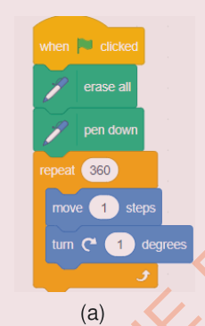
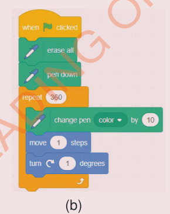

(a) If you turn 1 degree each time, you need to repeat it 360 times to complete the circle.
(b) If you turn 2 degrees each time, repeat it 180 times.
(c) If you turn 3 degrees, repeat it 120 times, and so on.
3. Small steps make small circles and big steps make big circles.
4. For a colourful circle, you may add a change pen color by ( ) block as shown in Figure 15 (b).


Activity 11: Drawing different shapes
By using a specialized application or other application, draw any shape by specifying the number of sides and the length of each side of the shape.
Steps
- 1. Choose the pencil sprite from the list of sprites
- 2. From the Variables block, create two variables named Length and Sides.
- 3. From the Controls block, choose the when green flag clicked block
- 4. From the Motion block, use the go to x (0) y (0) to set the initial position of the sprite to centre (0,0).
- 5. From the Pen blocks, choose erase all and pen down blocks.